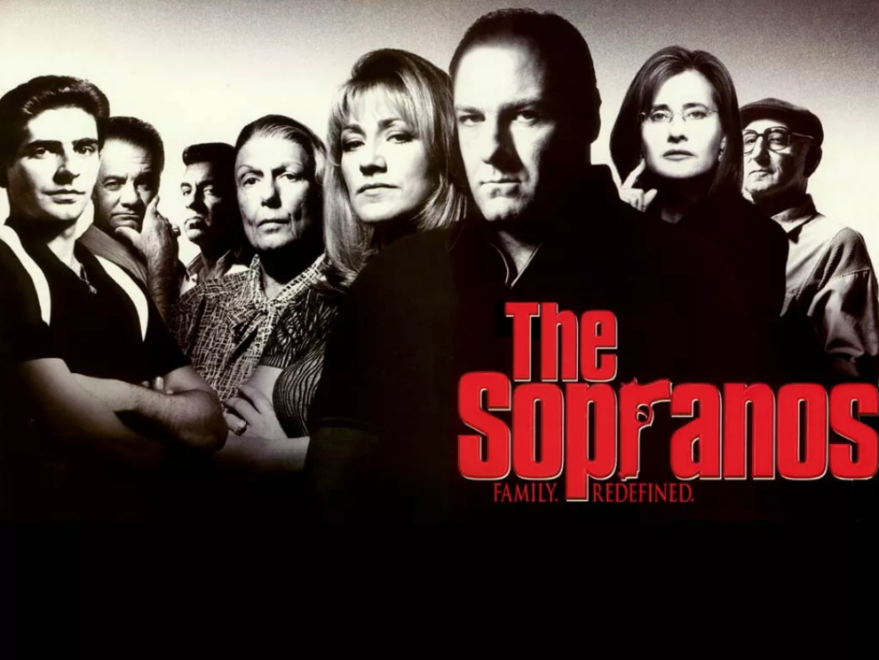

Tony Soprano, italo-americano de Nueva Jersey, está estresado e insatisfecho, atravesando una crisis de la mediana edad.
El personaje de Tony Soprano se construye desde la revisión de los modelos fundacionales de la historia del cine de gánsteres que están presentes desde la cita directa o indirecta, imitaciones, chistes, y toda clase de referencias (la imitación constante de Michael Corleone que realiza el personaje de Silvio, las charlas sobre El padrino, la proyección de El enemigo público, etc.). Son héroes de ascenso y caída trágica, héroes clásicos de los cuales Tony es un reflejo distorsionado y disgregado. Su imposibilidad de mantener a sus dos familias en armonía y según los códigos de la tradición lo piden lo son la causa de los ataques de pánico que lo llevarán al psicoanálisis. La presencia de una madre castradora y autoritaria que conspira contra su propio hijo, su tío que es su principal rival en los negocios y también conspira contra él junto con su madre, los conflictos generacionales con sus hijos y los problemas de comunicación con su esposa son algunos de los ejes de su terapia y de la serie. Y por el lado de la familia mafiosa, la lucha por el poder como consecuencia de la muerte por cáncer del jefe, Jackie Aprile, y más adelante los problemas con las familias de Brooklyn. A diferencia de la mayoría de las historias de mafiosos, Los Soprano no transcurre en Nueva York o Chicago sino en Nueva Jersey, cuya geografía se nos invita a recorrer con los títulos iniciales de cada capítulo. Frente a los grandes negocios mafiosos aparece el del reciclaje de basuras. Otro de los grandes temas que recorre la espina de la serie es la esencia y los conflictos del italo-americano en Estados Unidos, como otra forma de problematizar el tema de la identidad (tanto individual como grupal, y en las dos familias).
A partir de estas bases, el autor David Chase estudia con precisión de cirujano la condición humana y los conflictos morales y existenciales de nuestra época, poniendo en primer plano al hombre solo haciendo frente al mundo y al paso del tiempo.
